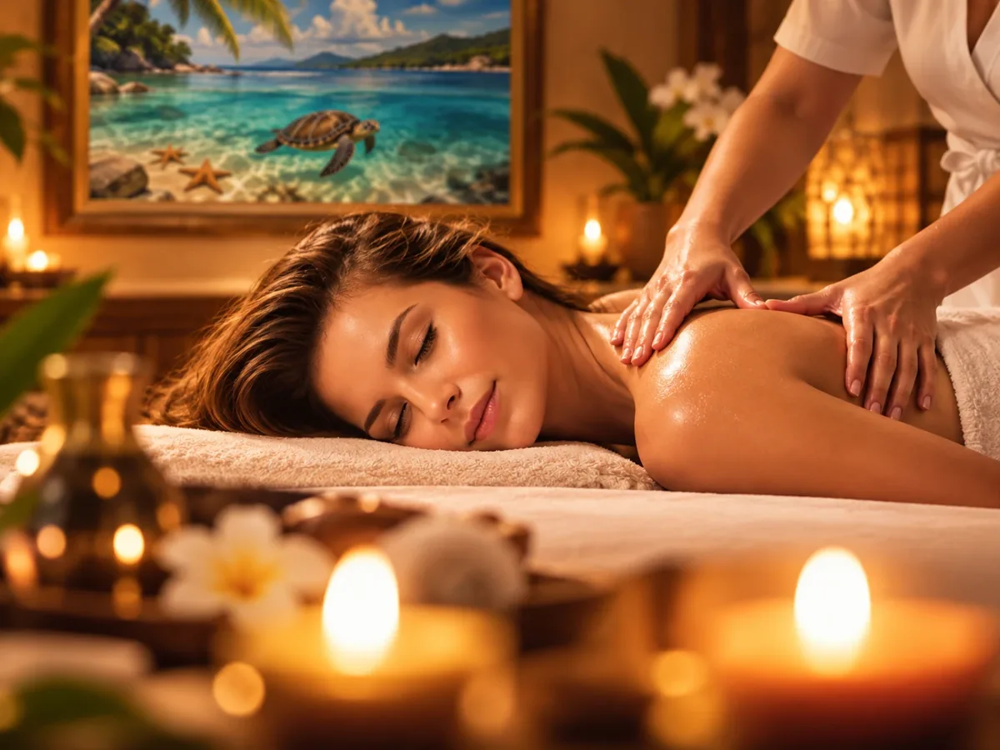

C'est une demande qui revenait souvent. Après trois jours de plongée, de randonnée et de route de montagne, mes voyageurs cherchaient un endroit où se faire masser — et se retrouvaient à chercher un salon, à réserver un créneau, à reprendre la voiture pour y aller. L'inverse de ce qu'on vient chercher ici.
Alors j'ai fait le chemin pour vous : une praticienne indépendante se déplace à la villa, et c'est moi qui m'occupe de l'organisation. Vous me dites quand, je m'occupe du reste.
60 € la séance de 45 minutes, réglés directement à la praticienne.

Comment ça se passe
- Vous m'en parlez — par WhatsApp ou par mail, idéalement avant votre arrivée.
- Je cale le rendez-vous avec la praticienne, selon ses disponibilités et les vôtres.
- Elle vient à la villa avec son matériel. Vous n'avez rien à prévoir.
- Vous choisissez l'endroit : la terrasse couverte, le jardin à l'ombre, ou une pièce calme de la maison.
Trois moments où ça change tout
Le soir d'une plongée
Deux plongées dans la matinée, la combinaison, les bouteilles, le bateau : le dos et les épaules s'en souviennent. Le massage du soir, après la douche, pendant que le soleil tombe derrière les îlets Pigeon — c'est probablement le meilleur moment de la semaine pour ça.
La villa est à cinq minutes de la plage de Malendure et des centres de plongée. Vous rentrez, vous vous posez, et la soirée commence par là.
Le lendemain d'une randonnée
La descente de la chute d'Acomat, les traces du parc national, la Soufrière : la Basse-Terre se mérite, et les mollets le rappellent le lendemain matin. C'est le moment où un massage n'est plus un luxe mais une bonne idée pratique — pour que le reste du séjour reste marchable.
Mes conseils de randonnée sont dans le guide des choses à faire à Bouillante.
La journée sans rien
En Côte-sous-le-Vent, une averse passe en vingt minutes — mais il y a toujours une journée où l'on décide de ne rien faire. C'est celle-là qu'il faut viser. La maison est calme, le terrain est clos, personne ne passe : les conditions sont meilleures qu'en cabine.
Et pour les couples, c'est souvent le moment du séjour qui reste en mémoire.
Les questions qu'on me pose
Faut-il réserver à l'avance ?
Oui. La praticienne a son propre agenda et ne travaille pas uniquement pour la villa. Prévenez-moi dès que vous avez une idée de la date — idéalement avant votre arrivée, pour avoir le choix du créneau.
Quel est le tarif ?
60 € pour une séance de 45 minutes. Le règlement se fait directement auprès de la praticienne : j'organise simplement le rendez-vous, sans rien prendre au passage.
Qu'est-ce que je dois prévoir ?
Rien. Elle vient avec sa table et son matériel. Prévoyez simplement de ne pas avoir de visite ni d'excursion dans l'heure qui suit — l'intérêt, c'est justement de ne pas regarder l'heure après.
Est-ce un soin médical ?
Non. Il s'agit d'une prestation de bien-être, non thérapeutique, assurée par une praticienne indépendante. Pour un soin de rééducation, adressez-vous à un masseur-kinésithérapeute : la commune en compte plusieurs.
Et si je ne loge pas à la villa ?
Ce service est réservé à mes voyageurs. Bouillante compte par ailleurs plusieurs praticiennes en massage bien-être, que vous trouverez facilement sur place.
Le massage se réserve avec le séjour
Villa CABOUA — 6 voyageurs, 3 chambres climatisées, terrasse couverte et jardin tropical, à Bouillante, à cinq minutes de la plage de Malendure et de la Réserve Cousteau.
Voir les disponibilités Demander un massage- Que faire à Bouillante ? — plages, cascades, bains chauds
- La Réserve Cousteau — plongée et snorkeling aux îlets Pigeon
- Où manger à Bouillante ? — mes trois tables préférées
- Louer à Bouillante — saisons, budget, quartiers
Prestation de bien-être non thérapeutique, assurée par une praticienne indépendante, sur réservation et selon ses disponibilités. La Villa CABOUA organise le rendez-vous.